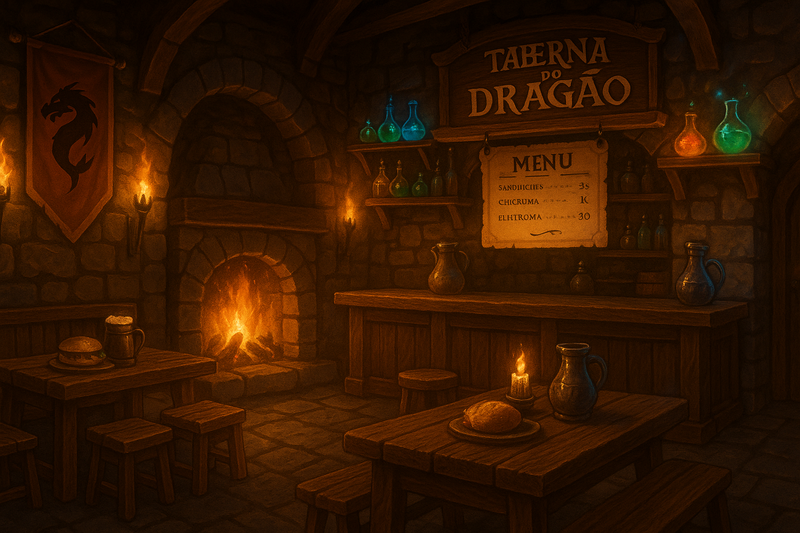

Nossa História
Bem-vindo à Taberna do Dragão, o lugar onde lendas e sabores se encontram para criar uma experiência única para o seu paladar. Fundada em 2025, nossa taberna é um refúgio de bons comeres e bebidas, inspirados nos antigos banquetes do reino.
Aqui, o fogo da forja nunca se apaga e o aroma dos nossos lanches artesanais e das poções encantadas vai te transportar diretamente para as terras místicas do nosso mundo medieval.
Na Taberna do Dragão, a comida não é só para sustentar o corpo, mas também para alimentar a alma. Cada mordida conta uma história, e cada gole traz o sabor das terras distantes que inspiraram nossa taberna.
Missão
Proporcionar experiências gastronômicas memoráveis com sabores autênticos e atmosfera acolhedora.
Visão
Ser reconhecida como a melhor taberna medieval do reino, onde cada visita é uma aventura.
Valores
Qualidade, tradição, hospitalidade e paixão pela autêntica culinária medieval.
Entre em Contato
Endereço: Rua Zézinho da Silva, 123 - Centro
Telefone: (44) 91234-5678
Instagram: @tabernadragao
Email: tabernadragao@email.com
Horário de Funcionamento: Terça a Domingo, das 18h à meia-noite